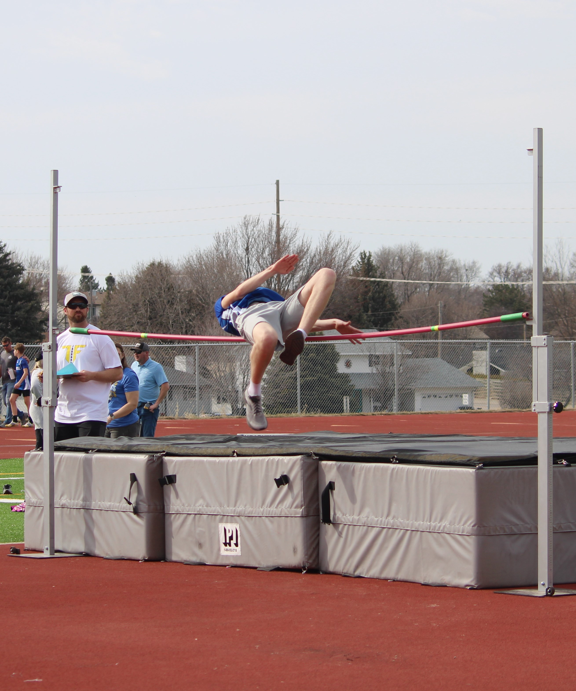
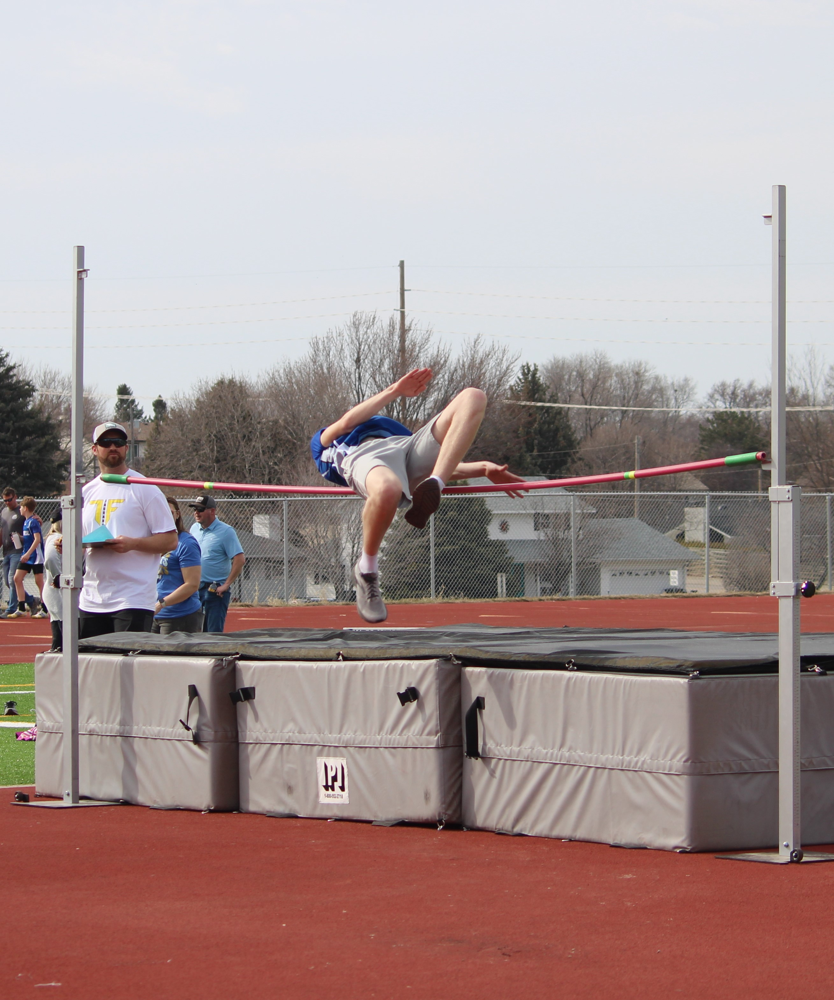

Ryan Dahlke is involved with many different groups including Boy Scouts,
Order of the Arrow, and School Sports. He also is part of his schools
Orchestra program playing Cello and Bass.
Here are just a few
pictures of activities Ryan has done.


 

Ryan Dahlke is also know for his onlien presence. Better known as RangerRhino23, Ryan is a Content Creator on Youtube. RangerRhino23 plays many different games including Minecraft, Call of Duty, and WarThunder with friends.
Ryan is also known for computer programming. He has worked on creating many different programs as well as smaller prototype games. You can check out all of his projects by going to his Github.